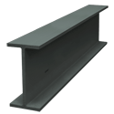
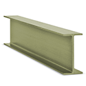
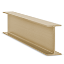
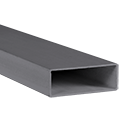
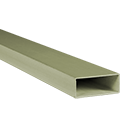
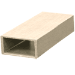

FRP Shapes
Harrington is a supplier of FRP shapes. FRP shapes are used in construction, architectural solutions, industrial applications, and other industries. Material types include FRP, IFR, IPE, and VFR. Select your product to request a quote, get additional information and purchasing options.

FRP I-Beam, (IFR) Isophthalic Polyester Fire Retardant, 4" x 2", 1/4" Thick, Slate Grayper FT · Sign in for price
FRP I-Beam, (IPE) Isophthalic Polyester Non-Flame Retardant, 4" x 2", 1/4" Thick, Olive Greenper FT · Sign in for price
FRP I-Beam, (VFR) Vinyl Ester Fire Retardant, 4" x 2", 1/4" Thick, Beigeper FT · Sign in for price- FRP I-Beam, (IFR) Isophthalic Polyester Fire Retardant, 6" x 3", 1/4" Thick, Slate GrayCall for availabilityAsk a branch
- FRP I-Beam, (IPE) Isophthalic Polyester Non-Flame Retardant, 6" x 3", 1/4" Thick, Olive Greenper FT · Sign in for price
- FRP I-Beam, (IFR) Isophthalic Polyester Fire Retardant, 6" x 3", 3/8" Thick, Slate Grayper FT · Sign in for price
- FRP I-Beam, (IPE) Isophthalic Polyester Non-Flame Retardant, 6" x 3", 3/8" Thick, Olive Greenper FT · Sign in for price
- FRP I-Beam, (VFR) Vinyl Ester Fire Retardant, 6" x 3", 3/8" Thick, Beigeper FT · Sign in for price
- FRP I-Beam, (IFR) Isophthalic Polyester Fire Retardant, 8" x 4", 3/8" Thick, Slate Grayper FT · Sign in for price
- FRP I-Beam, (IPE) Isophthalic Polyester Non-Flame Retardant, 8" x 4", 3/8" Thick, Olive Greenper FT · Sign in for price
- FRP I-Beam, (VFR) Vinyl Ester Fire Retardant, 8" x 4", 3/8" Thick, Beigeper FT · Sign in for price
- FRP I-Beam, (IFR) Isophthalic Polyester Fire Retardant, 8" x 4", 1/2" Thick, Slate Grayper FT · Sign in for price
- FRP I-Beam, (IPE) Isophthalic Polyester Non-Flame Retardant, 8" x 4", 1/2" Thick, Olive Greenper FT · Sign in for price
- FRP I-Beam, (VFR) Vinyl Ester Fire Retardant, 8" x 4", 1/2" Thick, Beigeper FT · Sign in for price

FRP Rectangular Tube, (IFR) Isophthalic Polyester Fire Retardant, 2-1/2" x 1-5/8", 1/8" Wall Thickness, Slate Grayper FT · Sign in for price
FRP Rectangular Tube, (IPE) Isophthalic Polyester Non-Flame Retardant, 2-1/2" x 1-5/8", 1/8" Wall Thickness, Olive Greenper FT · Sign in for price
FRP Rectangular Tube, (VFR) Vinyl Ester Fire Retardant, 2-1/2" x 1-5/8", 1/8" Wall Thickness, Beigeper FT · Sign in for price- FRP Rectangular Tube, (IFR) Isophthalic Polyester Fire Retardant, 4" x 2", 1/8" x 1/4" Wall Thickness, Slate Grayper FT · Sign in for price
- FRP Rectangular Tube, (IPE) Isophthalic Polyester Non-Flame Retardant, 4" x 2", 1/8" x 1/4" Wall Thickness, Olive Greenper FT · Sign in for price
- FRP Rectangular Tube, (VFR) Vinyl Ester Fire Retardant, 4" x 2", 1/8" x 1/4" Wall Thickness, Beigeper FT · Sign in for price
- FRP Rectangular Tube, (IFR) Isophthalic Polyester Fire Retardant, 6-1/2" x 2", 1/4" x 1/2" Wall Thickness, Slate Grayper FT · Sign in for price
- FRP Rectangular Tube, (IPE) Isophthalic Polyester Non-Flame Retardant, 6-1/2" x 2", 1/4" x 1/2" Wall Thickness, Olive Greenper FT · Sign in for price
- FRP Rectangular Tube, (VFR) Vinyl Ester Fire Retardant, 6-1/2" x 2", 1/4" x 1/2" Wall Thickness, Beigeper FT · Sign in for price
- FRP Rectangular Tube, (IFR) Isophthalic Polyester Fire Retardant, 7" x 4", 1/4" Wall Thickness, Slate Grayper FT · Sign in for price
- FRP Rectangular Tube, (IPE) Isophthalic Polyester Non-Flame Retardant, 7" x 4", 1/4" Wall Thickness, Olive Greenper FT · Sign in for price
- FRP Rectangular Tube, (VFR) Vinyl Ester Fire Retardant, 7" x 4", 1/4" Wall Thickness, Beigeper FT · Sign in for price
- FRP Rectangular Tube, (IFR) Isophthalic Polyester Fire Retardant, 9" x 6", 5/16" Wall Thickness, Slate Grayper FT · Sign in for price
- FRP Rectangular Tube, (IPE) Isophthalic Polyester Non-Flame Retardant, 9" x 6", 5/16" Wall Thickness, Olive Greenper FT · Sign in for price
- FRP Rectangular Tube, (VFR) Vinyl Ester Fire Retardant, 9" x 6", 5/16" Wall Thickness, Beigeper FT · Sign in for price
 FRP Round Tube, (IFR) Isophthalic Polyester Fire Retardant, 10" x 3/16", Slate Grayper FT · Sign in for price
FRP Round Tube, (IFR) Isophthalic Polyester Fire Retardant, 10" x 3/16", Slate Grayper FT · Sign in for price FRP Round Tube, (IPE) Isophthalic Polyester Non-Flame Retardant, 10" x 3/16", Olive Greenper FT · Sign in for price
FRP Round Tube, (IPE) Isophthalic Polyester Non-Flame Retardant, 10" x 3/16", Olive Greenper FT · Sign in for price FRP Round Tube, (VFR) Vinyl Ester Fire Retardant, 10" x 3/16", Beigeper FT · Sign in for price
FRP Round Tube, (VFR) Vinyl Ester Fire Retardant, 10" x 3/16", Beigeper FT · Sign in for price- FRP Round Tube, (IFR) Isophthalic Polyester Fire Retardant, 1" x 1/8", Slate GrayCall for availabilityAsk a branch
- FRP Round Tube, (IPE) Isophthalic Polyester Non-Flame Retardant, 1" x 1/8", Olive Greenper FT · Sign in for price
- FRP Round Tube, (VFR) Vinyl Ester Fire Retardant, 1" x 1/8", Beigeper FT · Sign in for price
- FRP Round Tube, (IFR) Isophthalic Polyester Fire Retardant, 1-1/4" x 1/8", Slate Grayper FT · Sign in for price
- FRP Round Tube, (IPE) Isophthalic Polyester Non-Flame Retardant, 1-1/4" x 1/8", Olive Greenper FT · Sign in for price
- FRP Round Tube, (VFR) Vinyl Ester Fire Retardant, 1-1/4" x 1/8", Beigeper FT · Sign in for price
- FRP Round Tube, (IFR) Isophthalic Polyester Fire Retardant, 1-1/2" x 1/8", Slate Grayper FT · Sign in for price
- FRP Round Tube, (IPE) Isophthalic Polyester Non-Flame Retardant, 1-1/2" x 1/8", Olive Greenper FT · Sign in for price